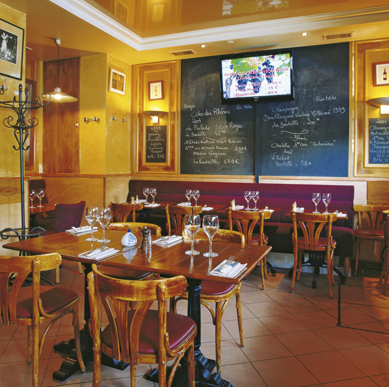
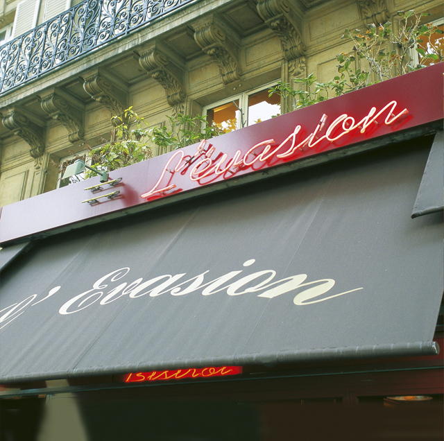

Wine Bar
Parisians know how to enjoy life; the staggering number of bistros is the most telling evidence of that fact. The Bistro l’Evasion on the Place de Augustin, not far from the Champs-Èlysées, has become very popular with wine lovers over the last five years. This is of course due to the cosy atmosphere, owner Laurent Brenta’s friendly demeanour (photo) and Cathrine’s charms, and chef Christophe Cavallo’s market-fresh cuisine. But mostly it is due to the well-equipped wine cellar, which contains over 500 noble vintages. While this might be an unusually large selection for a bistro, it isn’t the sole reason for its success. The host’s vinophilic passion is reflected in the particular attention given to the wine list, which encompasses some 400 products. Indeed, the ever-changing selection of wines is displayed on countless slates and a large flat screen monitor. Numerous first class vintages like an 87 Marc di Bourgogne from Romanèe-Conti and sparkling vintages of champagne from the best cellars in the country are served by the glass too. Different wines are offered almost every week, and complement superbly L’Evasion’s sumptuous classics like fois gras, marinated salmon and grilled veal cutlet.


{kind=link}
{kind=link}